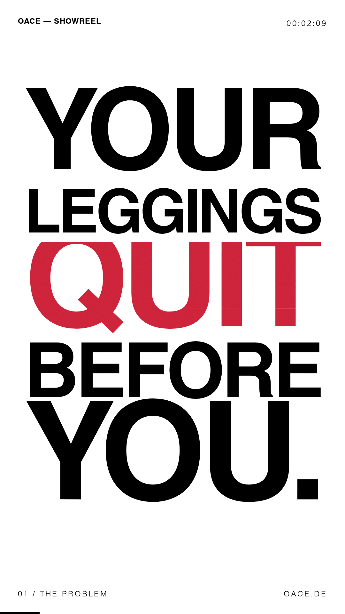
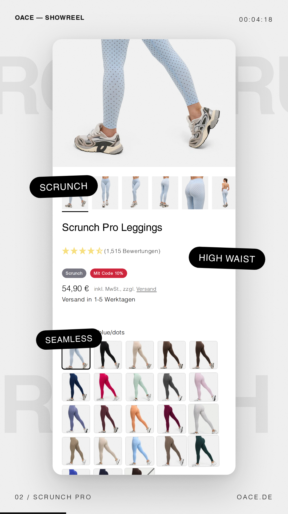
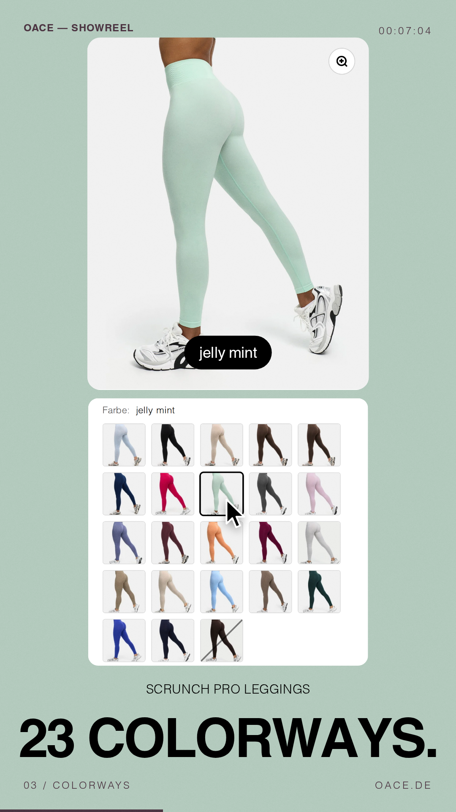
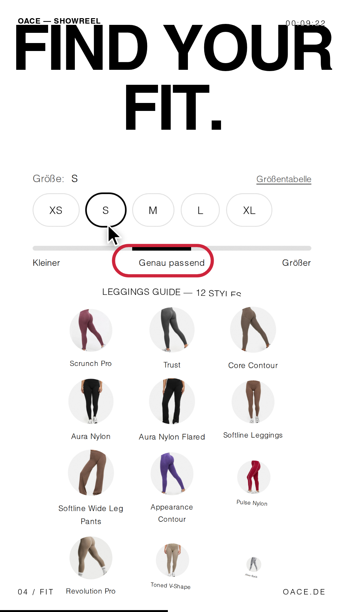
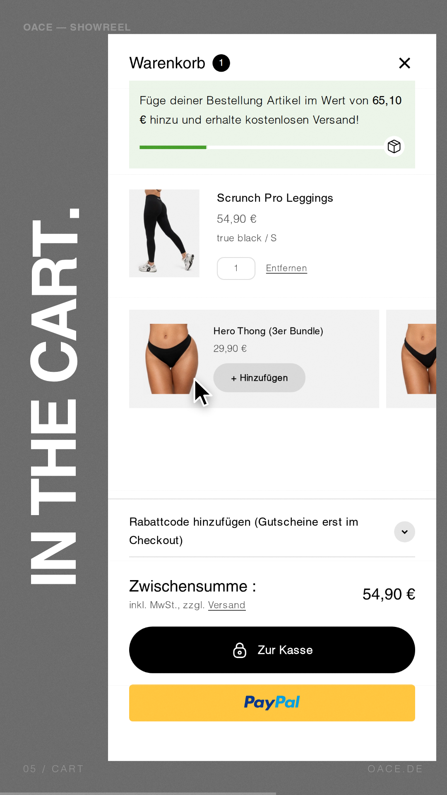
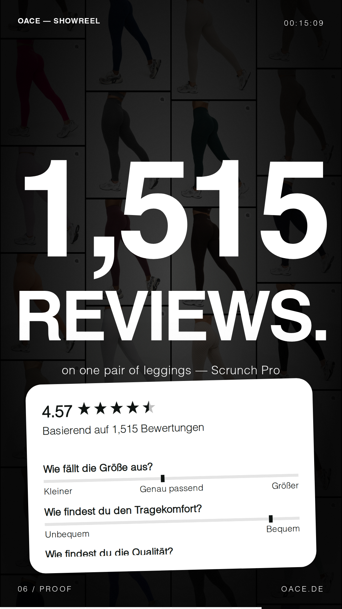
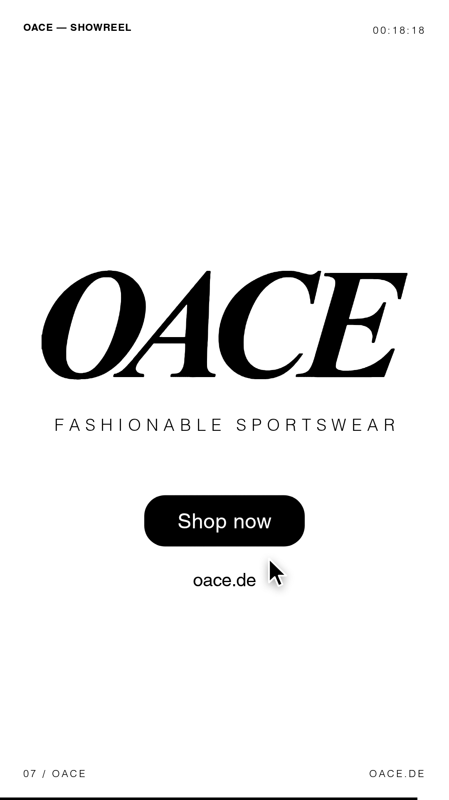

1 · Hook
"Your leggings quit before you." One word per beat, then a zoom through the O.
0.0 – 3.0s

2 · Product
The Scrunch Pro page builds itself piece by piece: photo, title, stars, price, then 23 swatch tiles.
3.0 – 6.0s

3 · 23 colorways
Cursor clicks real swatches: raspberry → jelly mint → true black, then a rapid run. Background floods with each color.
6.0 – 8.5s

4 · Find your fit
Cursor picks size S; "Genau passend" gets circled; the Leggings Guide grid pops in.
8.5 – 11.0s

5 · One tap
"In den Warenkorb" is clicked and the real cart drawer slides in (true black / S, 54,90 €).
11.0 – 13.5s

6 · Proof
1,515 reviews counted up, with the real review widget (4.57★) shown as proof.
13.5 – 16.5s

7 · Lockup + CTA
Colorway strobe, then the logo slams in. "Fashionable Sportswear", the Shop now button gets clicked, oace.de.
16.5 – 20.0s